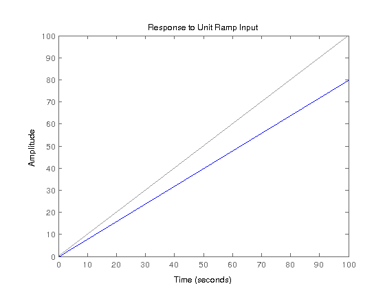

clc
Kp = 1;
Kd = 0;
Ki = 0;
Kc = 1;
Tl = 1;
Tg = 0.05;
A = 1;
s=tf('s');
K = pid(Kp,Ki,Kd);
P=tf(K);
syms x b;
Px = Kp + Ki/x + Kd*x;
GHx = (0.2*x +3.2)/((x+1)*(x+.8));
Cg = (x+1/Tg)/(x+1/(b*Tg));
kv = limit((x.*Cg.*Px.*GHx),0);
kv
if kv==0
B=1;
else
B = double(solve(kv==5,b));
end
Gc = (s+1/Tg)/(s+1/(B*Tg));
Gl = (s+(1*A)/Tl)/(s+1/(Tl));
GHs = (0.2*s +3.2)/((s+1)*(s+.8));
Cg = (x+1/Tg)/(x+1/(B*Tg));
Cl = (x+(1*A)/Tl)/(x+1/(Tl));
limit((x*Cg*Px*GHx),0)
Kv = limit((x * Cg * Cl * Px * GHx),x,0);
figure()
rlocus(P*Kc*Gc*Gl*GHs)
hold on
rlocus(GHs)
sgrid
hold off
figure()
sys = feedback(P * Kc * Gc * Gl * GHs,1);
step(sys)
t = 0:.01:100;
figure()
lsim(sys,t,t)
title('Response to Unit Ramp Input')
sse = abs(1-dcgain(sys));
S = stepinfo(sys);
tf(P * Kc * Gc * Gl * GHs)
fprintf('For the new system shown above the following results. \n');
fprintf('The sse is %f\n',sse);
fprintf('The overshoot is %f\n',S.Overshoot);
fprintf('The settling time is %f\n',S.SettlingTime);
fprintf('The value of Kv is %s\n',char(Kv));
kv =
0
ans =
0
ans =
0.2 s^3 + 7.4 s^2 + 71.2 s + 64
---------------------------------------
s^4 + 22.8 s^3 + 58.6 s^2 + 52.8 s + 16
Continuous-time transfer function.
For the new system shown above the following results.
The sse is 0.200000
The overshoot is 16.441601
The settling time is 3.977884
The value of Kv is 0
